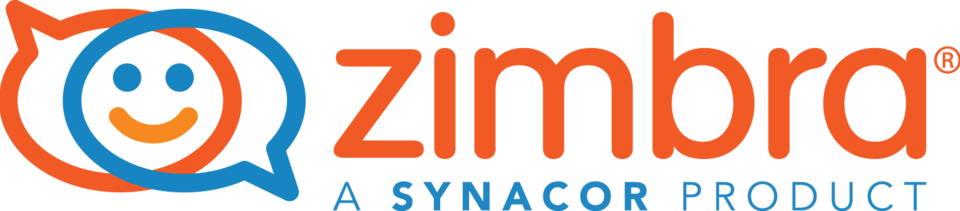

Zimbra
Zimbra는 이메일 서버와 웹 클라이언트를 포함한 협업 소프트웨어 모음이다. 2019년 이전에는 Zimbra Collaboration Suite(ZCS)라는 이름으로 알려졌다.
최종 업데이트

Zimbra는 어떤 브랜드인가
Zimbra Collaboration은 이메일 서버와 웹 클라이언트를 갖춘 협업 소프트웨어 모음이다. 오픈 소스 버전과 상용 지원 버전인 Network Edition의 두 가지 판으로 제공된다.
웹 클라이언트는 이메일과 그룹 일정을 지원하며 현재는 문서 공유, 채팅, 화상회의 기능도 갖추고 있다. 서버는 SOAP API로 모든 기능을 노출하고 IMAP과 POP3 서버로도 동작한다.
Mozilla Thunderbird, Evolution, Microsoft Outlook, Apple Mail 같은 클라이언트와 메일, 연락처, 일정을 동기화할 수 있다. 여러 모바일 기기와의 기본 양방향 동기화도 지원한다.
Zimbra는 어떻게 시작되고 성장했나
Zimbra는 LiquidSys가 처음 개발했으며, LiquidSys는 2005년 7월 26일 사명을 Zimbra, Inc.로 바꿨다. Zimbra Collaboration Suite는 2005년에 처음 출시되었다.
회사는 2007년 9월 17일 Yahoo!에 인수되었고 2010년 1월 12일 VMware에 매각되었다. 2013년 7월 VMware가 Telligent Systems에 매각했으며, Telligent Systems는 2013년 9월 사명을 Zimbra, Inc.로 바꿨다.
이후 2015년 8월 18일 Synacor가 인수했다. 이름은 전 사장 겸 CTO Scott Dietzen에 따르면 Talking Heads의 노래 "I Zimbra"에서 유래했다.
Zimbra의 브랜드 아이덴티티는 무엇인가
이메일 서버와 웹 클라이언트를 한 묶음으로 제공하며, 오픈 소스 버전과 상용 지원 Network Edition으로 나뉘는 협업 소프트웨어이다.
Zimbra의 대표 제품과 서비스는 무엇인가
Zimbra는 오픈 소스 버전과, Outlook용 Messaging Application Programming Interface 커넥터 같은 비공개 소스 구성요소를 포함한 상용 지원 버전 Network Edition으로 제공된다. 서버는 Postfix를 MTA로 쓰고 ClamAV, SpamAssassin, DSPAM 기술을 안티멀웨어에 활용하며 CalDAV, CardDAV, SMTP, LDAP, Microsoft Active Directory를 지원한다.
웹 클라이언트는 Zimbra Ajax Toolkit으로 작성되었고 고급 검색, 온라인 문서 작성, Zimlet 매시업, 전체 관리 UI를 포함한다. 데스크톱 이메일 클라이언트 Zimbra Desktop도 제공했으나 2019년까지 개발이 종료되었다.
Zimbra는 지금 어떤 상태인가
8.5 버전부터 소스 코드는 백엔드가 GNU General Public License 2판, 프런트엔드가 Common Public Attribution License 1판 조건으로 공개된다. Network Edition은 Zimbra Network Edition EULA에 따라 배포된다.
대부분의 구성요소는 오픈 소스로 유지되지만 공식 바이너리는 더 이상 무료로 내려받아 쓸 수 없다.
Zimbra 로고는 어떻게 변해왔나
자주 묻는 질문
Zimbra는 언제 설립되었나요?
Zimbra는 2005년 설립되었습니다.
Zimbra는 어떤 산업의 브랜드인가요?
Zimbra는 기술·전자 분야의 브랜드입니다.
Zimbra의 브랜드 아이덴티티는 무엇인가요?
이메일 서버와 웹 클라이언트를 한 묶음으로 제공하며, 오픈 소스 버전과 상용 지원 Network Edition으로 나뉘는 협업 소프트웨어이다.
Zimbra의 대표 제품은 무엇인가요?
Zimbra는 오픈 소스 버전과, Outlook용 Messaging Application Programming Interface 커넥터 같은 비공개 소스 구성요소를 포함한 상용 지원 버전 Network Edition으로 제공된다.
Zimbra는 현재 어떤 상태인가요?
8.5 버전부터 소스 코드는 백엔드가 GNU General Public License 2판, 프런트엔드가 Common Public Attribution License 1판 조건으로 공개된다.
Zimbra의 공식 웹사이트는 어디인가요?
Zimbra의 공식 웹사이트는 https://www.zimbra.com/ 입니다.
출처와 검증
Zimbra 관련 참고: 공식 웹사이트 · 위키데이터 Q203485 · 한국어 위키백과 · 영어 위키백과. 브랜드명은 한글과 원어를 함께 표기하되 데이터에 없는 표기는 만들지 않습니다. 기원 국가·설립연도는 검수된 정의문에서 확인된 값을 우선하고, 없을 때만 공식 웹사이트 URL이 일치하는 위키데이터 개체의 값을 씁니다. 탄생일의 월·일은 위키데이터, 위키백과 정보상자, 본문 가운데 같은 연월로 확인되는 값만 싣고, 출처끼리 다르면 싣지 않습니다. 위키데이터 값은 2026-11-14 기준입니다.